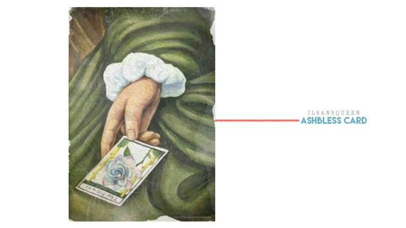

In a previous post, I told you the story of Smeraldo. Do you still remember the place where I met this flower, about the Academy of Playing Cards? Are you interested in the connection between Smeraldo and playing cards? Today I will talk about a figure closely associated with maps - about William Ashbless.
Very little is known about Ashbless, in addition to being an Italian nobleman and poet. He was also well versed in maps that began to gain popularity in 16th-century Europe. He made playing cards for the palace and the noble salons, but they said Ashbless fell ill, immersed himself in his work. This happened when he visited the village to unwind. In search of hot springs and fresh air to restore health, Ashbless stumbled upon the Smeraldo.
On the edge of the village, where only the ruins of the castle remained, a flower of unearthly beauty blossomed. None of the locals knew his name, and later he heard about a love story from an old woman from the village. As you understand, being absorbed in playing cards, Ashbless was a romantic nature. The story of an ugly man and a poor woman was an inspiration to him. Ashblesse gave the name to the flower and gave its meaning in the language of flowers. The flower was called "Smeraldo", taking the end of the name of the village - ‘La Città di smeraldo’, and in the language of flowers it meant ‘non potevo dire la verità’ (a truth that cannot be said). Returning home, he drew a card with this flower and named it “Flower Card”, and also included it in the set of “Ashbless Cards”.
Its direct meaning is “pleasure”, “flowering”, and inverted - “fall”, “end” and “new start”. It was said that the Ashbless Maps became a sensation in Europe. But few remember this now. The thing is that during the inter-noble struggle, the Ashbless family lost their status and left no trace in history. Together with them, the Ashbless Cards and the story of the Smeraldo flower were forgotten. But, as happens with any beautiful legend, there are things that do not allow to forget about it. The love story and the Ashbless story will be back. I will talk about this in the next post. 